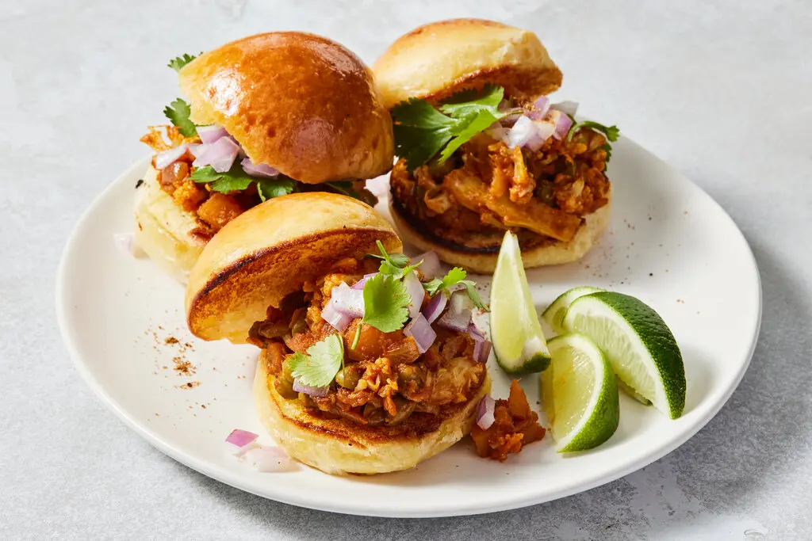

Pav Bhaji
Prep Time: 20 mins
Cook Time: 40 mins
India being a sub-continent has many states, and these states are essentially a country on their own. Pav Bhaji, meaning bread and spiced vegetable mixture, is an extremely popular Maharastrian street food that is famous through all of India.
Tools
- Pav Bhaji Masala Powder - Purchased from a local indian store
- Large pan
- Optional - Instant Pot or Pressure Cooker
Ingredients
- Spices
- 1 tsp cumin seeds
- 1 tsp coriander seeds
- 1/4 tsp of cumin powder (for later)
- 1/2 tsp coriander powder
- 1/4 tsp kashmiri red chili powder (paprika to substitue)
- 1 Tbsp Pav Bhaji Masala Powder to taste
- Optional - 1 Tbsp Kasoori Methi
- Salt to taste
- Vegetables and Other
- 3 or 4 stalks of cilantro separating stems and leaves, both finely chopped
- 1 Tbsp of ginger and garlic
- 1 green chili pepper removing inner seeds and membranes for mild heat
- 1 medium onion finely diced
- 1 cup or 2 medium tomatoes diced
- 1 Tbsp oil
- 1 Tbsp Butter
- 2-3 medium potatoes peeled and diced
- 1.5 cups of frozen peas and carrots
- 1 cup of cauliflower (About 1/2 head of small cauliflower or 1/4 of a large cauliflower)
- 1 bell pepper diced
Instructions
-
Using a pressure cooker or instant pot
- Pour 2 cups of water to the bottom of your cooker or pot. Then put in the stand that came with your cooker/pot
- Add potatoes, cauliflowers, carrots and peas to a metal bowl or pressure cooker/pot safe container and cover with water. Put the container into the cooker and secure the lid. Note: if using an instant pot, remember to turn lid knob to "Sealing".
- On an instant pot, you can just press the Rice button, or cook on high pressure for 12 minutes. For a pressure cooker, turn off the heat after 2 whistles. For a non-whistling pressure cooker, turn off the heat after 10 mins of it releasing steam. Using a Pot
- If using a pot, then add the potatoes, cauliflower, peas and carrots to the pot, pour water until 1 inch over the vegetables, cover and cook on medium heat for 10 minutes or until soft. Then keep 1 cup of water with the vegetables, and remove any excess (there should not be much excess). Gravy base
- Heat oil in pan on medium heat. When hot, add cumin and coriander seeds.
- When spices have released their fragrance, add onions, ginger-garlic paste, and cook until onions have softened and started to brown.
- Add the cilantro stems and tomatoes and cook down until the mixture in the pan has started to separate from the oil.
- Once separated, add the powdered spices as well as the Pav Bhaji Masala, and another pinch of salt to taste. Then, quickly add the cup of vegetable water to the mixture and stir well.
- Once everything is mixed, add the vegetables and mash it together until a chunky gravy has formed. Then add the bell pepper and the kasoori methi and cook for 3-5 more minutes. Pav or Bread
- In a separate pan, melt some butter on the pan, and put half a bun down in the pan. Flip over when browned and toasted to toast the other side.
- Serve as an open sandwich with some raw diced onion and cilantro.
Enjoy this popular street food. It might be messy, but it is delicious!